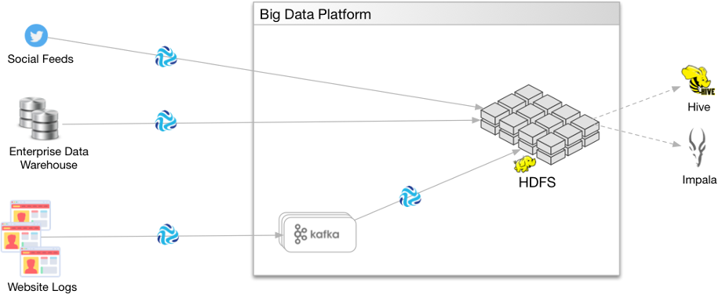
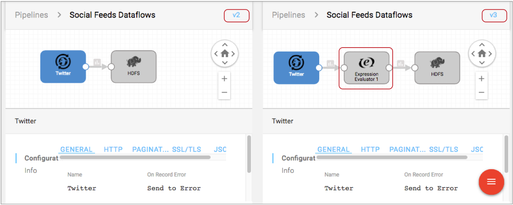
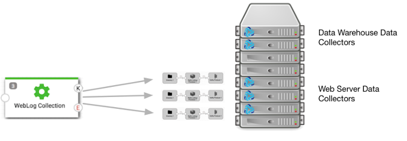
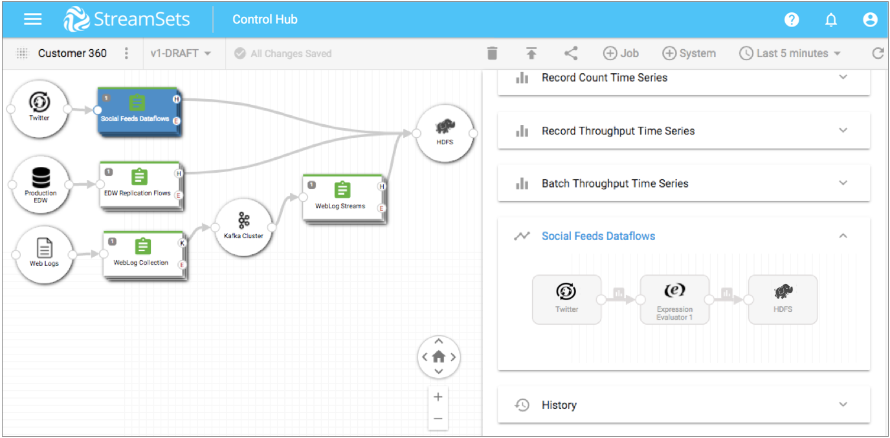
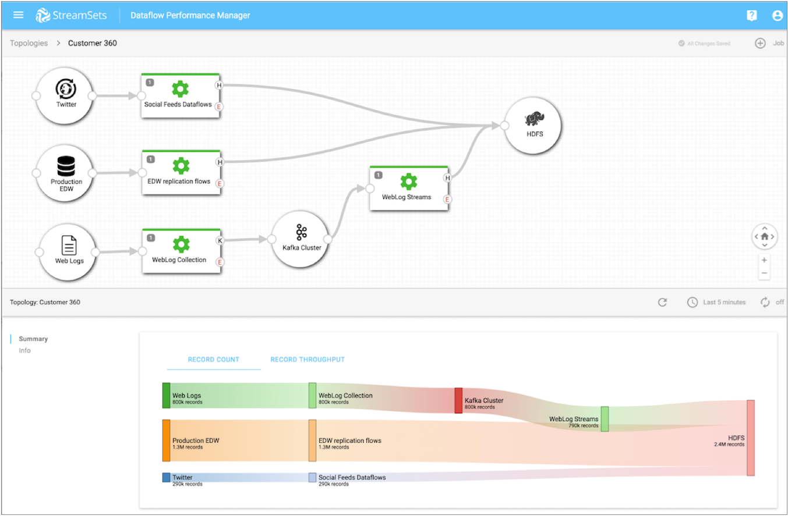
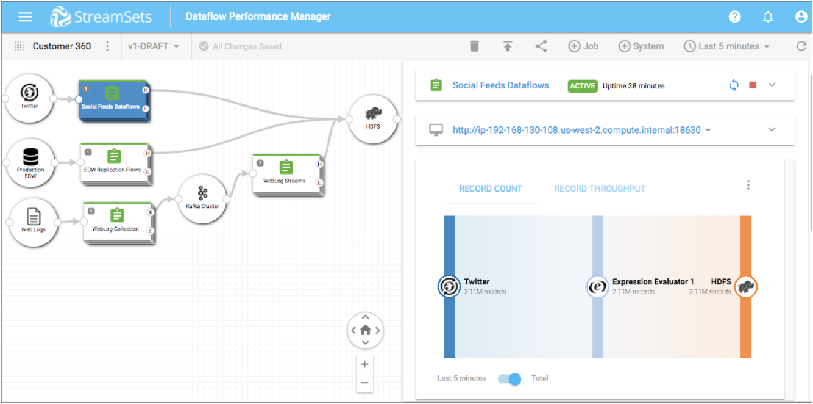

Meet Dataflow Performance Manager
StreamSets Dataflow Performance ManagerTM (DPM) is a management console for data in motion. DPM lets you map, measure, and master complex dataflows within your organization. With DPM, you can map multiple dataflows in a single visual topology and track changes to the dataflows over time. You can view real-time statistics to measure the performance and quality of your dataflows. You can master your day-to-day operations by monitoring alerts to ensure that incoming data meets business requirements for availability and accuracy.
Multiple types of users within your organization can perform different roles in DPM. For example, a data architect typically creates a high-level design of how data needs to flow through multiple systems. A data engineer uses this high-level design to develop individual pipelines in a development Data Collector. The data engineer then publishes the finished pipelines to DPM. A DevOps or site reliability engineer adds published pipelines to jobs and then runs the jobs across multiple Data Collectors. Data architects map the related jobs into a single visual topology, and then use the topology to monitor and measure the complete dataflow.
Let’s take a closer look at what data architects, data engineers, and DevOps engineers can accomplish with DPM.
Design the Complete Data Architecture
As a data architect - the person responsible for defining how data is stored, consumed, and managed by different systems - you design the complete flow of data through multiple systems. You might architect the high-level design in a design document or diagram. Then, you work with your team to develop Data Collector pipelines that meet those dataflow needs.
For example, you need to create a 360-degree view of your customers by collecting all customer data captured in your organization’s social feeds, enterprise data warehouse, and website logs. You need to send all of the data to the Hadoop Distributed File System (HDFS) for further analysis using tools such as Hive and Impala. You determine that the website logs must be written to Kafka as an intermediary system before being streamed to HDFS.
To address this need, you create the following high-level design of the complete data flow:

Then the rest of your team uses this high-level design to develop the necessary pipelines, jobs, and topologies within Data Collector and DPM.
Manage the Pipeline Repository
As a data engineer - the person responsible for making sure that data flows smoothly between systems - you use a development Data Collector instance to develop the pipelines needed to implement the designed data architecture. When the pipelines are complete, you publish the pipelines to the pipeline repository in DPM.
DPM provides release management of pipelines. A typical pipeline development cycle involves iterative changes to the pipeline. DPM maintains the version history of each published pipeline. For example, as you design the Social Feeds Dataflows pipeline, you test the pipeline and then make changes to it. As a result, you will likely publish the pipeline to the DPM pipeline repository multiple times, as displayed in the following image of the pipeline history:

When viewing the pipeline history in DPM, you can view the configuration details for any pipeline version and can compare pipeline versions side-by-side. For example, if we click the Compare with Previous Version icon for version 3 in the image above, DPM displays version 2 and version 3 in the comparison window as follows:

We can see that version 3 of the pipeline added an Expression Evaluator processor. We can drill into the details of each pipeline stage, and compare the configuration of each stage between the versions.
You can add tags to pipeline versions to mark release points or to separate development and production environments. For example, when you finish developing the Social Feeds Dataflows pipeline, you add a "Ready to Deploy" tag to the latest version. That tag informs your DevOps engineer which pipeline version is ready to be added to a job and run.
Manage the Orchestration of Running Jobs
In DPM, pipelines are the design of the dataflow. Jobs are the execution of the dataflow.
As a DevOps or site reliability engineer - the person responsible for ensuring that all services and systems are scalable and reliable - you create DPM jobs to run pipelines and to determine the Data Collectors that run the jobs. When you run a job on a group of Data Collectors, DPM remotely runs the pipeline on all Data Collectors in the group. This enables you to manage and orchestrate large scale dataflow jobs run across multiple Data Collectors.
You might organize jobs by project, geographic region, or department. For example, your data engineer has developed and published the WebLog Collection pipeline and the EDW Replication Flows pipeline. In your data center, you designate Data Collectors that run on several of the servers as the web server group. You designate another group of Data Collectors running on other servers as the data warehouse group. You then create a job to run the WebLog Collection pipeline on the group of web server Data Collectors.
The following image displays how the WebLog Collection job runs a remote pipeline instance on each Data Collector in the web server group. The job does not run on Data Collectors in the data warehouse group, which are Data Collectors that are reserved for jobs that read from the enterprise data warehouse.

Map Jobs into a Topology
In Data Collector, you can monitor and view the details of a single pipeline. However, you typically run multiple intermediary pipelines, all of which work together to create a complete dataflow.
As a data architect, you create a topology in DPM to map multiple related jobs into a single view. A topology provides interactive end-to-end views of data as it traverses multiple pipelines.
To continue our Customer 360 example, after the WebLog Collection pipeline reads web server log files and writes the data to Kafka, another pipeline consumes the Kafka data, processes it, and streams the data to HDFS. Additional pipelines read from Twitter social feeds and from an enterprise data warehouse and also write the data to HDFS. In DPM, you can create a topology that includes jobs for all the pipelines, as follows:

From the topology, you can select each job and then drill into the configuration details of each pipeline. You can add any number of jobs to a topology.
Measure Dataflow Quality
DPM provides the same level of detailed monitoring for topologies and jobs that you are accustomed to seeing for pipelines within Data Collector.
As a data architect, you can measure the health of the topology and the performance of all jobs and connecting systems included in the topology. DPM monitoring provides real-time statistics, error information, and alerts about the running jobs.
For example, the Summary tab of the Customer 360 topology provides a single view into the record count and throughput for all running jobs in the topology:

You can select a job or a connecting system within the topology to discover more detailed monitoring about the job or system.
When a job runs on a group of Data Collectors, DPM provides a single view of the statistics for the complete job. From a job, you can view the statistics for a single pipeline or you can view the aggregated statistics across all remote pipeline instances that are run on a group of Data Collectors.
For example, if we select the Social Feeds Dataflows job in the topology, the Summary tab displays metrics for the selected job:

We've seen how you can use DPM to turn a high-level architecture diagram of your dataflows into pipelines and jobs that you can then manage and measure from a single topology. Give it a try, and see for yourself how easy DPM has made it to map, measure, and master your data in motion.